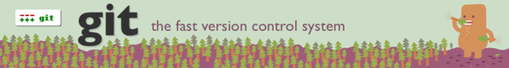

Jul 23, 2010 · 2 minute read · Comments
Games development

Como he comentado en el artículo de presentación de mi PFC, parte del mismo será una documentación sobre la programación de videojuegos en 3D utilizando Ogre como motor gráfico. Inicialmente iba a publicar dicha documentación en formato PDF con una licencia libre pero he decidido crear una wiki. De esta forma será posible darle mucha más difusión y, en el mejor de los casos, crear una comunidad de programadores de videojuegos en 3D a su alrededor.
Finalmente, IberOgre, la wiki de Ogre 3D en español abre sus puertas. No son pocas personas a las que he de agradecérselo. Para empezar al profesor y director de la Oficina de Software Libre de la Universidad de Cádiz, Manuel Palomo Duarte por animarme a emplear este medio y cederme un espacio en el servidor de la OSLUCA. También está colaborando Nolia Sales Montes, quien nos ha montado el wiki. Hay que mencionar que ha ganado el IV CUSL en la categoría de “mejor proyecto de educación y ocio” con WikiUnix. José Tomás Tocino García me ha estado ayudando en la concepción del logo, la mascota del motor pintada para la batalla con unos reconocibles colores.
No puedo estar más satisfecho con el comienzo de este proyecto porque nada más empezar tengo un colaborador, Alberto Cejas Sánchezel cual merece una mención especial. Actualmente está comenzando su PFC, un simulador de fútbol desarollado con Ogre3D. Dada la evidente similitud de nuestras tareas hemos decidido unir esfuerzos y trabajar en IberOgre.
Actualmente no puede ser editada por el público, hemos preferido esperar a que tenga una estructura bien definida. Preveemos que en unos meses sea completamente abierta.
Será complicado pero espero que IberOgre siga un ritmo tan bueno como con el que ha comenzado.
Jul 15, 2010 · 1 minute read · Comments
Games development

Hasta ahora en los trabajos en los que he participado y que han requerido un sistema de control de versiones se ha utilizado Subversion. Funciona de maravilla en grupos pequeños y cuenta con una curva de aprendizaje más que razonable. Cuando la elección del sistema de control de versiones para mi proyecto parecía estar clara ha surgido la idea de utilizar Git en su lugar.
Muchos compañeros en la Universidad me han hablado de sus virtudes y he seguido su consejo. Git tiene un enorme potencial e incita a ser ordenado a la hora de realizar commits. Aunque tendría que añadir una línea a la lista de tecnologías a dominar de cara al proyecto me he lanzado a la piscina creando un repositorio Git en Gitorious.
Para hacer clone simplemente:
git clone git@gitorious.org:sion-tower/sion-tower.git
Para ir aprendiendo estoy leyendo Pro Git, un libro excelente que explica detalladamente y de manera accesible tanto los conceptos como la forma de trabajar con Git. Se puede comprar una versión impresa aunque está disponible al completo en la página web.
Por ahora sólo está la planificación pero espero que en breve tenga más contenido.
Jul 12, 2010 · 1 minute read · Comments
Games development
Confeccionar la planificación es la primera tarea que he llevado a cabo, al menos en su versión preliminar. Estoy seguro de que será muy difícil respetarla de manera estricta pero al menos quiero intentarlo, por ello me he dado unos plazos bastante razonables (hay que ser realista).
Seguiré el consejo de mi tutor de proyecto e iré registrando el progreso real, de manera que, comparando la planificación estipulada con el trabajo realizado, me daré cuenta en qué partes me he equivocado y se han producido más inexactitudes.
La planificación está hecha con Planner, un software open source que permite establecer tareas y asignárselas a personas produciendo un diagrama de Gantt según las dependencias de dichas tareas. Es muy sencillo de utilizar e increíblemente más ligero que Gantt Proyect, lo cual es lógico teniendo en cuenta que el último está escrito en Java. Hay que reconocer que es más limitado, pero para las dimensiones de mi proyecto me viene de perlas.
En líneas generales se divide en:
- Formación
- Documentación
- Desarrollo
Podéis encontrar la versión completa en html aquí.
Jul 11, 2010 · 2 minute read · Comments
Games development
Estando al borde de terminar todas las asignaturas de Ingeniería Técnica en Informática de Gestión (a falta de conocer una nota) va siendo hora de ponerse manos a la obra con el Proyecto Fin de Carrera (PFC). Desde hace algún tiempo he estado meditando el tema aunque desde el principio tenía claro que iba a estar relacionado con los videojuegos y, por fin, tengo las ideas más claras.
Documentación de Ogre3D
Básicamente la decisión ha sido crear un manual de referencia en español sobre los conceptos básicos de la programación en 3D y el motor Ogre3D. Cada sección del mismo vendrá acompañado de ejemplos prácticos que, de manera iterativa, construyan un videojuego muy sencillo. Además, pretendo desarrollar un videojuego más completo utilizando los conocimientos adquiridos en el proceso.
Elegí Ogre3D frente a otros motores como Panda3D o Irrlicht porque, aunque tiene una curva de aprendizaje muy inclinada, es potente, flexible y lo utilizan varios juegos comerciales, veáse Torchlight. Me di cuenta de que prácticamente toda la documentación existente estaba en inglés y no repasaba los conceptos matemáticos y físicos básicos del espacio. Por ello, pensé en documentar el motor y crear una guía que sirva de introducción a la programación de videojuegos en 3D utilizando Ogre como herramienta.
Sion Tower
No tengo un diseño formal del videojuego pero sí un concepto aproximado. Quiero encaminarlo en el género de los tower defense, una especie de estrategia en la que se debe defender una zona durante un tiempo determinado ante oleadas de enemigos. Seguramente conoceréis juegos con esta mecánica, Plants vs Zombies por ejemplo.
Controlaremos a un joven hechicero que debe proteger sólo una torre sagrada mientras hordas del mal tratan de invadirla. Cada nivel será un piso de la torre en el que colocando trampas mágicas o lanzando potentes hechizos debemos ralentirzar a la oleada enemiga. El nombre es importante, para tener una identidad desde el comienzo y se llamará Sion Tower.
Jul 9, 2010 · 1 minute read · Comments
General
Welcome to Sion Dream, a blog for my personal projects especially my passion: game development. You can get further information about them in the “Projects” section. However, there is still room for posts talking about my hobbies like: TV Series, films or literature. If you want to know more about me, go to the “About” page.
I hope you enjoy the reading!